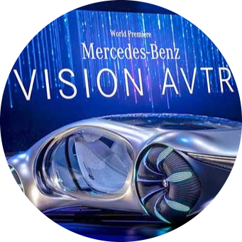
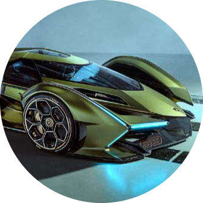
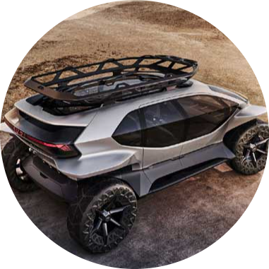
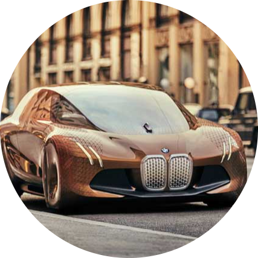
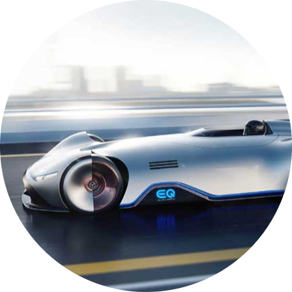

|  | 1. Mercedes Vision AVTRThe Vision AVTR is an electric car that uses an organic battery, |
2. Lambo V12 Vision Gran TurismoV12 Vision Gran Turismo is a futuristic concept car developed by |
 |
|  | 3. Audi Al-Trail QuattroAl-Trail Quattro is a concept car by Audi, and it is a vision of Audi’s |
4. BMW Next 100The Next 100 is BMW’s Vision of how future cars will look like, and with |
 |
|  | 5. Mercedes Vision EQ Silver ArrowVision EQ Silver Arrow is an extraordinary car by Mercedes, and it has |